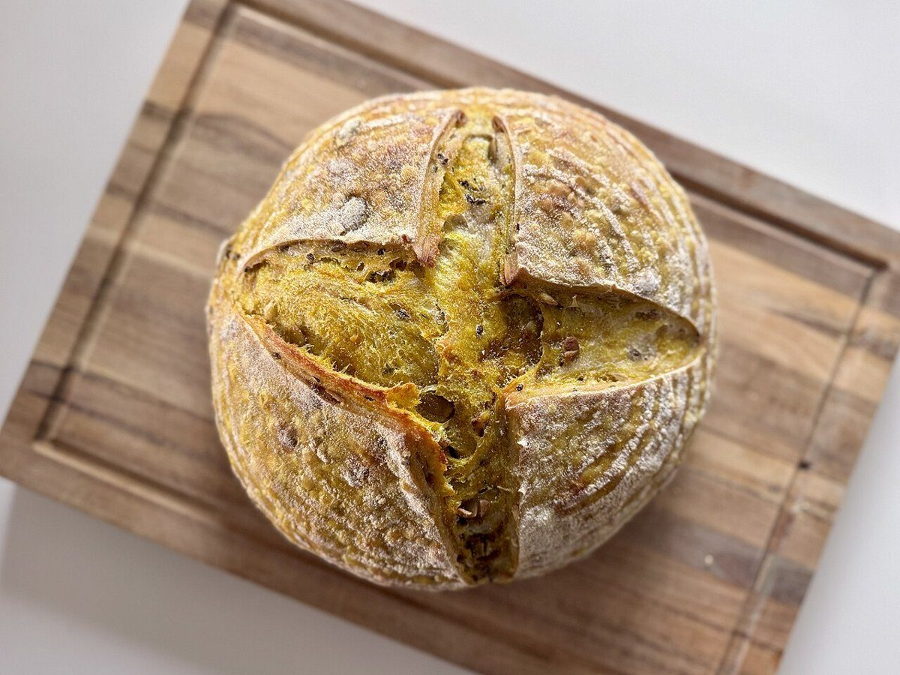
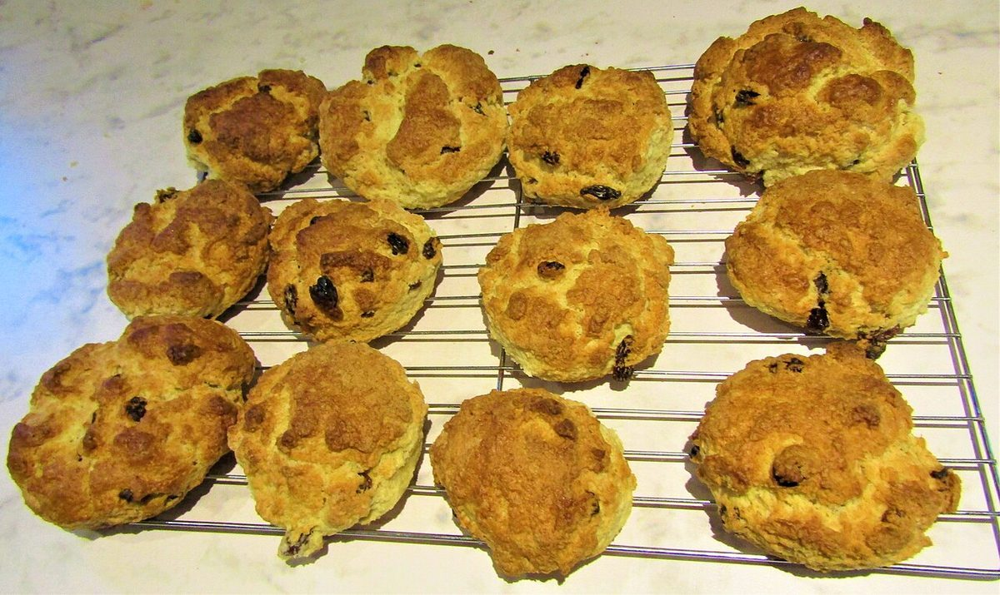

メニュー
メニュー
メニューと価格は準備中です。確認でき次第、こちらに掲載します。
| メニュー | 準備中 |
|---|---|
| 価格 | 準備中 |
| ご予約 | 準備中 |
下の写真は、パンや焼き菓子の雰囲気を伝えるためのフリー素材で、お店で提供しているものではありません。提供内容を示すものでもありません。
上段
撮影地不明のイメージ 国外のイメージ(アメリカ) 
撮影地不明のイメージ

下段国外のイメージ(イギリス) 
国外のイメージ(アメリカ) 
国外のイメージ(ポルトガル)

メニュー
メニューと価格は準備中です。確認でき次第、こちらに掲載します。
| メニュー | 準備中 |
|---|---|
| 価格 | 準備中 |
| ご予約 | 準備中 |
下の写真は、パンや焼き菓子の雰囲気を伝えるためのフリー素材で、お店で提供しているものではありません。提供内容を示すものでもありません。

